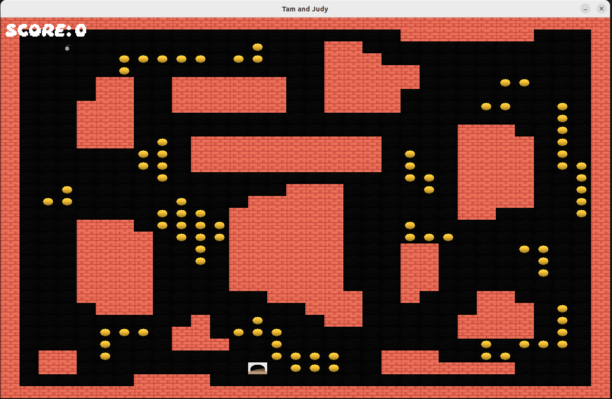
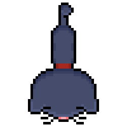
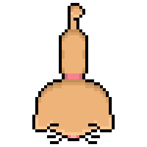
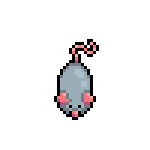
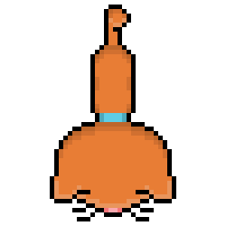
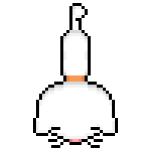

Game Trailer
Screenshots



Sprite Animation Previews





Documentation & Resources
Engine Architecture

Post-Mortem
Over the course of the last few weeks, we built a fully functional D game engine with several key components working properly. We are really proud of our user interface, where the user can choose to play the game, build a game level, or load a specific level, saved in JSON format. We're also really satisfied with our game engine, which successfully loads and manages our scenes; it also supports advanced aspects like background music, spritesheet animations, and collision detection! We also went out of our way to make custom sprite assets, which we think are really cool and hope the player enjoys.
With additional time on the project, we would work to make sure our game loop runs entirely as intended, with animated interpolation of sprite elements and interactions. We would add a bit more complexity to the structure of the game, and make a better victory / lose screen that can be written by the player. We would also love to see different items and game modes to the game, and lastly believe the art assets would benefit from greater polish, with additional sprite variations and animations, and we would also work to refine the game interactions, adding visual and audio feedback (SFX) for events like collecting points or colliding with enemies to create a more fun player experience.